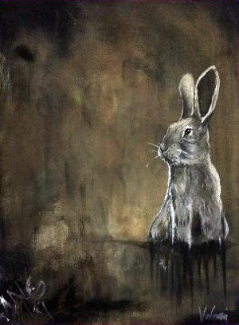
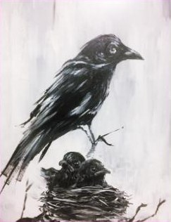
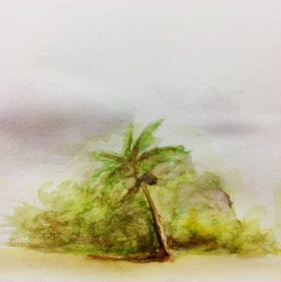
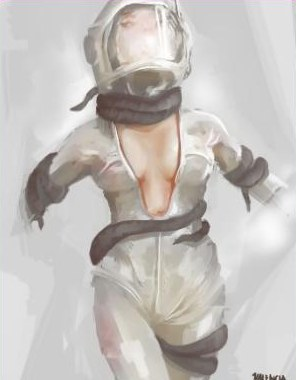
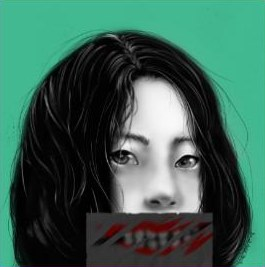
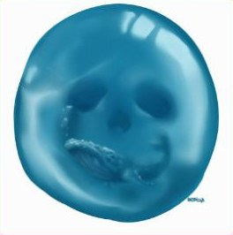
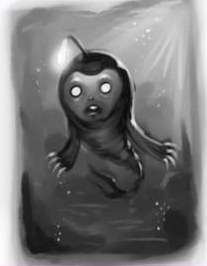

Studio 03 — Conceptual art
After
hours.
Where the ideas start. Acrylic, watercolor and digital paintings — figures, creatures and quiet, slightly strange moments.
01 · Acrylic & watercolor
Traditional paintings
Painted by hand, on canvas and paper.





02 · Painted on screen
Digital paintings
Portraits and surreal concepts, mostly in monochrome with one strong color.





The paintings feed the products.
Character sense from these studies shows up in the toys, mascot trophies and sculpts.
See it in 3D →Commissions
open.
Portraits, concept art and illustration for products, events and print.